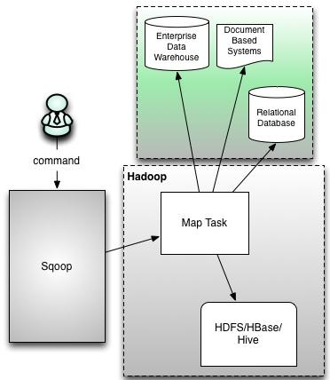

Sqoop产生背景
1）RDBMS ==》Hadoop
file ==》load hive
shell==》file==》hdfs
mapreduce：inputformat outputformat
2）Hadoop ==》RDBMS
MapReduce：TextInputFormaat DBoutputFormat
存在的问题
1）MR麻烦
2）效率低：新的业务线 写一个MR
==》抽取一个框架
如果要实现一个数据迁移的框架；
1）RDBMS层面：首先想到驱动Driver还有username、password、url、database、table、sql
2）Hadoop层面：hdfs、path、分隔符、mappers、reduces
3）扩展一：当有一个新的业务线介入以后，那么我们只需要将新的业务线对应的参数传递给mapreduce即可
A）hadoop jar的方式来提交
B）动态的根据业务线来传入参数
4）扩展二：ok了吗？我们要追求工匠精神
思路是什么？==》WebUI+DB 以节目配置的形式来展现给用户也就是UIUE
可以使用Spring Boot微服务构建大数据平台 Sqoop概述
官方网站：http://sqoop.apache.org/
Apache Sqoop(TM)是一个工具，用于在Apache Hadoop和结构化数据存储(如关系数据库)之间高效地传输大量数据。
注意，Sqoop1与Sqoop2不兼容；Sqoop2功能不完整，不适合生产部署。
RDBMS<==>Hadoop（HDFS/HIVE）
Sqoop：SQL-to-Hadoop
连接传统数据库到Hadoop之间的一个桥梁

MapReduce：一定有Mappr和Reduce吗？不一定
使用MapReduce来完成导入操作；是否需要reduce。不一定；不做聚合类的操作就不需要
Sqoop底层：一个读写的操作，只需要map就可以搞定，不需要reduce
Sqoop有两个版本：1.x 2.x（1.99开头）Sqoop1架构

command
Sqoop
Enterprise Data Warehouse数据仓库
Document Based Systems基于文本的文档
Relational Database 关系型数据库
图有缺陷，图中应该有多个map task（可以手动控制map的个数）
Sqoop2架构

Sqoop Server上UI； Connectors和Metedata里存有配置信息
Sqoop2里有Reduce TaskSqoop部署：sqoop-1.4.6
下载解压 配置环境变量 1 | [hadoop@hadoop software]$ tar -zxvf sqoop-1.4.6.tar.gz -C ../app/ |
移动mysql-connector-java-5.1.44.jar包到$SQOOP_HOME/lib目录下
我们要配置的东西都在conf下面
1 | [hadoop@hadoop conf]$ ll |
需要配置的【用什么配置什么】我们先配置HADOOP_COMMON_HOME HADOOP_MAPRED_HOME HIVE_HOME
1 | #Set path to where bin/hadoop is available |
sqoop命令
sqoop help就可看到命令帮助
1 | Available commands: |
演示查看mysql的库1 | [hadoop@hadoop conf]$ sqoop list-databases --connect jdbc:mysql://192.168.232.8:3306 --username root --password root |
查看某库的表【只需要在connect后加库名即可】不明白就以sqoop list-tables --help查看帮助即可
sqoop list-tables --connect jdbc:mysql://192.168.232.8:3306/test --username root --password rootMysql数据导入到hdfs
【导入导出是基于Hadoop来说的】
sqoop import \
--connect jdbc:mysql://192.168.232.8:3306/test
--username root
--password root
--table emp 【-m 1】【-m指定的是map的数量默认四个】
【–delete-target-dir】【如果文件存在先删除存在的文件夹再导入】
【–mapreduce-job-name】【设置作业的名字】
【–colums】【设置指定的列，双引号里的列名以逗号分割】
【–target-dir】【不指定路径会导入用户根目录下/usr/hadoop/表名】
【–where】【比如–where “SAL>200”】这里的SAL是表里的一个列名
【–query】【比如–query “select *from emp where sal>2000 and \$CONDITIONS”】这个是执行sql的参数不能和【–table】一同使用;sql语句中不加[and \$CONDITIONS]会报错。还有另一种写法【比如–query ‘select *from emp where sal>2000 and $CONDITIONS’】
执行会报错：
坑：java.lang.NoClassDefFoundError:org/json/JSONObject
拷贝包java-json.jar到$SQOOP_HOME/lib目录下再次执行即可
插入知识点：hadoop fs -ls和hadoop fs -ls / 的区别 hadoop fs -ls默认就是hadoop fs -ls /usr/hadoop/emp
上诉没有配置路径所以–table emp 会在hadoop fs -ls下面
问题；为什么有四个map【hdfs的emp文件夹里会有四个文件】 导出没有主键的表到HDFS
假如表salgrage没有主键
sqoop import \
--connect jdbc:mysql://192.168.232.8:3306/test
--username root
--password root
--table salgrage
上诉直接执行会报错【可以通过--split-by解决或者直接使用-m 1来解决】
--split-by GRADE【需要加上这个参数；GRADE是列名；意思是按照这一列切分数据】
-m 2
1）map=4的时候
2）没主键如何切分数据 导入HDFS文件分隔符及空值的处理
--fields-terminated-by '\\t' 表示以$$为分隔符导入HDFS中
null值的处理
--null-string '0'【String类型用0来替换】
--null-non-string ''【不是String类型用空来替换】 导入HDFS文件direct模式介绍
【快速从mysql导入hdfs的方式】
–direct 【后面不加任何参数】
原理是利用数据库里的mysqlimport工具比jdbc更加高效 http://archive.cloudera.com/cdh5/cdh/5/sqoop-1.4.6-cdh5.7.0/SqoopUserGuide.html
注意：Direct-mode import form mysql does not support column指direct模式不支持列指定
Database version --direct support? connect string matches
HSQLDB 1.8.0+ No jdbc:hsqldb:*//
MySQL 5.0+ Yes jdbc:mysql://
Oracle 10.2.0+ Yes jdbc:oracle:*//
PostgreSQL 8.3+ Yes (import only) jdbc:postgresql://
CUBRID 9.2+ NO jdbc:cubrid:* 增量导入HDFS文件
Table 5. Incremental import arguments:
Argument Description
–check-column (col) Specifies the column to be examined when determining which rows to import. (the column should not be of type CHAR/NCHAR/VARCHAR/VARNCHAR/ LONGVARCHAR/LONGNVARCHAR)
–incremental (mode) Specifies how Sqoop determines which rows are new. Legal values for mode include append and lastmodified.
–last-value (value) Specifies the maximum value of the check column from the previous import.–check-column 指定一列
–incremental append和–delete-target-dir不能一块用
–last-value 以这个列的这个值为标准，导入比这个值大的数据
eval的使用
执行一个sql语句；把这个结果在控制台展示出来
sqoop eval \
–connect jdbc:mysql://192.168.232.8:3306/test
–username root
–password root
–query “select * from emp”
-options-file
-options-file的使用:工作中推荐使用【讲sqoop命令直接封装成一个文件】
vim test.txt【test内容为下列几行】
import
--connect
jdbc:mysql://192.168.232.8:3306/test
--username
root
--password
root
--table
salgrage
sqoop执行的时候直接
sqoop --options-file test.txt导出HDFS数据到MySQL
导出之前需要把empdemo表创建好
create table empdemo as select * from emp where 1=2;意识是比照emp创建一个空表【没有索引之说；索引在大数据都是鸡肋】
相同的导入条件每次导入数据；数据就会重复【配合shell脚本手工删除目标数据】
sqoop export \
--connect jdbc:mysql://192.168.232.8:3306/test
--username root
--password root
--table empdemo
--export-dir /user/hadoop/emp 【要导出的HDFS文件路径】
-m 1
【--update-key】【按照key更新数据】导入Mysql数据库到Hive表
sqoop import \
–connect jdbc:mysql://192.168.232.8:3306/test
–username root
–password root
–query “select * from emp”
--hive-import
--create-hive-table 【在工作当中最好不要自动直接创建；要手动创建表】
--hive-table emp【指定表名】
【--hive-overwrite】【覆盖掉重复的数据】
【--hive-partition-key "month"】【分区表导入参数】
【--hive-partition-value "2019-2"】【分区表导入参数】
cd到$HIVE_HOME/lib里拷贝jar包
hive-common-1.1.0.jar
hive-shims-*
到$SQOOP_HOME/lib下导出Hive表到MySQL数据库
sqoop export \
–connect jdbc:mysql://192.168.232.8:3306/test
–username root
–password root
–table emp_demo
–export-dir /user/hive/warehouse/emp_import【hive数据表路径】
–fields-terminated-by ‘’ 【分隔符】
-m 1
sqoop job
sqoop job –help 可以查看封装job所需参数【工作中使用sqoop job+crontab】
创建一个job
sqoop job –create myjob \
-- import \【注意这里–后有一个空格】
–connect jdbc:mysql://192.168.232.8:3306/test
–username root
–password root
–query “select * from emp”
执行job
sqoop job --exec myjob ** demo **
1. 创建Job 说明：在创建Job时，使用–password-file参数，而且非–passoword。主要原因是在执行Job时使用–password参数将有警告，并且需要输入密码才能执行Job。当我们采用–password-file参数时，执行Job无需输入数据库密码。
sqoop job --create test_job
\-\- import
--connect jdbc:mysql://10.96.3.8:3306/lOT_DMPS
--username galera --password-file /data/cdh/hive/hiveExternal/sqoopMysqlTest.pwd
--table test\_etl --target-dir '/data/cdh/hive/hiveExternal/TEST\_ETL'
--check-column id
--incremental append
--last-value 1
--null-string '\\\N'
--null-non-string '\\\N'
--fields-terminated-by '\\001'
--lines-terminated-by '\\n' -m 12.创建password-file文件
注：sqoop规定密码文件必须放在HDFS之上，并且权限必须为400
（1）echo -n “123456” > sqoopMysqlTest.pwd
（2）hdfs dfs -put sqoopMysqlTest.pwd /data/cdh/hive/hiveExternal
（3）hdfs dfs -chmod 400 /data/cdh/hive/hiveExternal/sqoopMysqlTest.pwd
3.执行job
sqoop job -exec test_job
4.查询job ,主要是查看增量更新字段中每次执行后报错的值
sqoop job -show test_job
5.查看job list
sqoop job –list
6.删除job
sqoop job -delete test_job
小案例:场景: mysq1有emp表,不直接使用mysq1进行统计,而是先将mysq1中的emp表数据通过sqoop抽取到hive中然后使用hive进行统计分析,统计的结果通过sqoop导出MySQL数据库
这是常见的ETL操作 extraction tranformation load